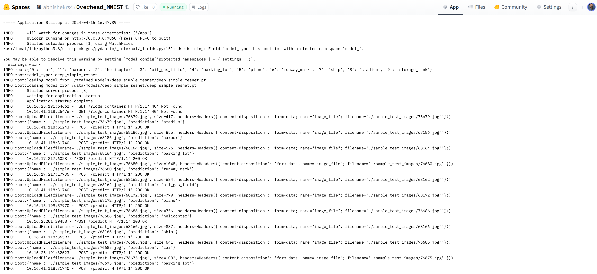
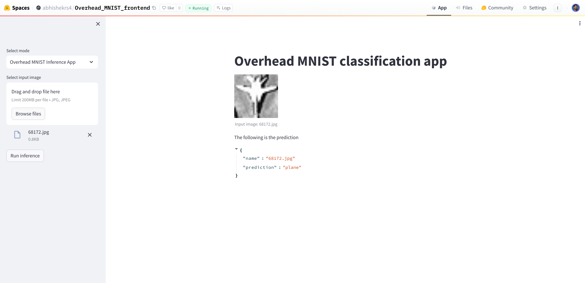

Tech Blog: Deploying a dockerized Deep Learning, Computer Vision API using FastAPI on HuggingFaceSpaces
Posted by Abhishek R. S. on 2024-04-15, updated on 2024-04-27
In this project, a FastAPI backend application and a streamlit frontend is deployed to HuggingFaceSpaces.
The deployed API backend application can be found in the HuggingFaceSpaces
Overhead_MNIST.
This can also be found in the GitHub overhead_mnist.
The Overhead MNIST dataset, with ten classes, is used for this project.
A CNN is trained to classify overhead satellite images. Weights and Biases is used for MLOps.
The best performing model (with >96% ) is used for deployment.
An API is deployed using FastAPI, to which an image can be sent in a POST request.
The response would contain the prediction for the image. The UploadFile object is used to
send an image file via POST request to the FastAPI application.
The uvicorn ASGI server is used for serving the FastAPI application.
I had to use git-lfs for tracking the weights files.
This is achieved using the git lfs install command in the HF project repo.
There is a tailor-made option for deploying docker applications on HuggingFaceSpaces.
The Readme.md for any HuggingSpace repo contains the metadata.
The app_file is an important field mentioning the application file.
The port 7860 is used for serving docker applications deployed on HuggingFaceSpaces.
Dockerizing a FastAPI application is straight-forward without any major issues.
However, I faced some minor issues with the dependencies.
-
The first issue is with one of the dependencies of FastAPI.
The dependency python-multipart needs to be explicitly
mentioned in the requirements.txt
-
The second issue is with OpenCV. The recommended thing to do
is to use a headless version of OpenCV with python namely the opencv-python-headless
instead of the normal opencv-python
The endpoint link to which the POST request can be sent for a HuggingFaceSpaces
deployed application can be found in Embed this Space option. The localhost:port
is replaced with the link from Embed this Space with the appropriate application endpoint.
The following image shows a screenshot of the output logs of the backend API.

The deployed streamlit frontend application can be found in the HuggingFaceSpaces
Overhead_MNIST_Frontend.
For the streamlit frontend, I faced minor issues during deployment.
-
The first issue is with the streamlit app port.
The app_port needs to be explicitly
mentioned in the Readme.md
-
The second issue is with the streamlit config. Some of the config is in .streamlit/config.toml.
This is in the project directory. The rest of them are in the command used to start the application.
-
The third issue is with the dockerizing the application. A user needs to be added along
with some env path for containerized deployment.
The following image shows a screenshot of the output logs of the frontend.

To summarize, I had a positive learning experience during this project deployment.
|